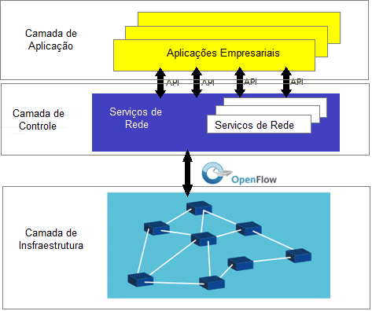

SDN(Software-defined networking), ou Redes definidas por software, é a separação física do plano de controle de rede do plano de encaminhamento, e também onde o plano de controle controla vários dispositivos.
Seu objetivo é permitir que engenheiros e administradores de nuvem e rede respondam rapidamente às mudanças nos requisitos de negócios por meio de um console de controle centralizado. O SDN engloba vários tipos de tecnologias de rede projetadas para tornar a rede mais flexível e ágil para suportar o servidor virtualizado e a infra-estrutura de armazenamento do moderno data center. A rede definida por software foi originalmente definida como uma abordagem para projetar, construir e gerenciar redes que separa a rede do plano de controle (cérebro) do de encaminhamento(músculo), permitindo que o controle de rede torne-se diretamente programável e a infraestrutura subjacente a ser abstraído para aplicações e serviços de rede.

Figura 1: Divisão das camadas
Como funciona:
Os provedores de rede definidos por software oferecem uma ampla seleção de arquiteturas concorrentes, mas no seu mais simples, o método Software Defined Networking centraliza o controle da rede separando a lógica de controle dos recursos de computador fora do dispositivo. Todos os modelos SDN têm alguma versão de um controlador SDN, bem como APIs southbound e APIs northbound:
Controladores: Os "cérebros" da rede, os Controladores SDN oferecem uma visão centralizada da rede global e permitem que os administradores de rede ditem aos sistemas subjacentes (como switches e roteadores) como o plano de encaminhamento deve lidar com o tráfego da rede.
APIs Southbound: usa APIs southbound para retransmitir informações para os switches e roteadores "abaixo". O OpenFlow, considerado o primeiro padrão do SDN, era a API original do lado sul e permanece como um dos protocolos mais comuns. Apesar de alguns considerarem OpenFlow e SDN a mesma coisa, OpenFlow é apenas uma peça do enorme panorama SDN.
APIs Northbound: usa APIs northbound para se comunicar com os aplicativos e lógica de negócios "acima". Estes ajudam os administradores de rede a configurar o tráfego e implantar serviços de forma programática.
Essa tecnologia aprimora os benefícios da virtualização do data center, aumentando a flexibilidade, a utilização de recursos e reduzindo custos e sobrecargas de infraestrutura.
O protocolo OpenFlow é um elemento fundamental para a construção de soluções SDN. A arquitetura SDN é:
Diretamente programável: pois o controle de rede é dissociado das funções de encaminhamento.
Ágil: abstrair o controle do encaminhamento permite que os administradores ajustem dinamicamente o fluxo do tráfego em toda a rede, atendendo às necessidades em constante mudança.
Logicamente centralizada: uma das principais características dessas redes. Essa centralização se dá em controladores SDN, dispositivos que mantêm uma visão global da rede servindo de interface central entre as camadas de Aplicação e de dados, facilitando o gerenciamento dos nós da rede como um todo.
Programaticamente configurada: permite que os gerentes de rede configurem, gerenciem, protejam e otimizem os recursos de rede rapidamente através de programas dinâmicos e automatizados, que podem ser escritos sozinhos, porque os programas não dependem do software proprietário.
Segue um padrão comum: Quando implementado por meio de padrões abertos, ela simplifica o design e a operação da rede, pois as instruções são fornecidas pelos controladores SDN em vez de vários dispositivos e protocolos específicos do fornecedor.
Tendências:
A SDN aborda o fato de que a arquitetura estática de redes convencionais é mal adequada para as necessidades de computação e armazenamento dinâmicos dos dias de hoje, como os data centers. A chave das tendências de computação que impulsiona a necessidade de um novo paradigma de rede incluem:
A mudança dos padrões de tráfego: Aplicações que comumente acessam bancos de dados e servidores distribuídos geograficamente através das nuvens públicas e privadas exigem uma gestão do tráfego extremamente flexível, e acesso a um tamanho de banda sob demanda.
O "consumerização de TI": o fato de funcionários levarem seus próprios dispositivos móveis para o trabalho, e os usarem para compartilhar arquivos ou dados dentro e fora do escritório, tende a exigir redes flexíveis e seguras.
O aumento de serviços em nuvem: Os usuários esperam ter acesso sob demanda para aplicações, infraestrutura e outros recursos de TI.
"Big Data": A manipulação de mega conjuntos de dados hoje em dia, que requer processamento paralelo massivo, está alimentando uma demanda por constante capacidade adicional e conectividade any-to-any.
Como os designers de rede se sentem prejudicados pelas limitações das redes atuais, na tentativa de satisfazer os requisitos de rede colocados pela evolução das tendências de computação:
Complexidade leva a um período de inatividade: A adição ou a movimentação de dispositivos e a implementação de políticas de rede são complexas, demoradas e, principalmente, manuais, que correm o risco de interromper o serviço, desestimulando as mudanças na rede.
Incapacidade de escalar: a abordagem tradicional de super-subscrição de links para fornecer escalabilidade não é eficaz com os padrões de tráfego dinâmico em redes virtualizadas - um problema ainda mais acentuado nas redes de provedores de serviços com algoritmos de processamento em paralelo de grande escala e conjuntos de dados associados.
Dependência do fornecedor: os longos ciclos de produtos de equipamentos de fornecedores e a falta de interfaces padrão e abertas limitam a capacidade dos operadores de rede de adaptar a rede aos seus ambientes individuais.
ONF - Open Networking Foundation:
É uma organização orientada e dedicada à promoção e adoção da SDN, e vem implementando SDN por meio de padrões abertos, tais quais são necessários para avançar a indústria de redes. O OpenFlow Standard é o primeiro e único fornecedor de interface de comunicação padrão definido entre as camadas de controle e de encaminhamento de uma arquitetura SDN.